The NACHO app is a dashboard for the quality control of NanoString
nCounter data. You load a study, change the thresholds, look at the
plots, and export the result. This article walks through the app with
the example data GSE74821. Each picture shows the app in
light mode. The app also has a dark mode, which you can switch on at the
right of the navigation bar.
Start the app
There are three ways to start the app.
-
visualise()opens the app on anachoobject in your R session. When you click Done, the app closes and returns the object with your thresholds and settings. -
nacho_app()returns a Shiny app object. Pass it toshiny::runApp(), or give it to a server. -
deploy()copies the app to a directory, for example for a Shiny Server.
To start with an empty app and upload your own files, call
nacho_app() without an argument.
Load data
The Data page loads a study. Choose RCC files, zip
archives and an optional sample sheet. The page then lists the RCC files
that it found, with the zip archive of each file, whether it is a
PlexSet file, and whether the sample sheet lists it. For a PlexSet file,
the list shows how many of the eight samples, S1 to S8, are in the
sample sheet. Check the list, then click Import. If you
have the mirai package, the app reads the files in the
background, and the line under Import shows the current
stage. Without mirai, the app is blocked until the import
ends. The sample sheet is a CSV file with an IDFILE column
that holds the RCC file names. For PlexSet files, it also has a
plexset_id column with the values S1 to S8. To try the app
first, click Load the example data (GSE74821).
Above every page, a summary strip shows the number of samples, the number of cartridges, the number of flagged samples and the method. The strip changes when you change the thresholds. Point at the information icon next to Flagged to see why samples are flagged.
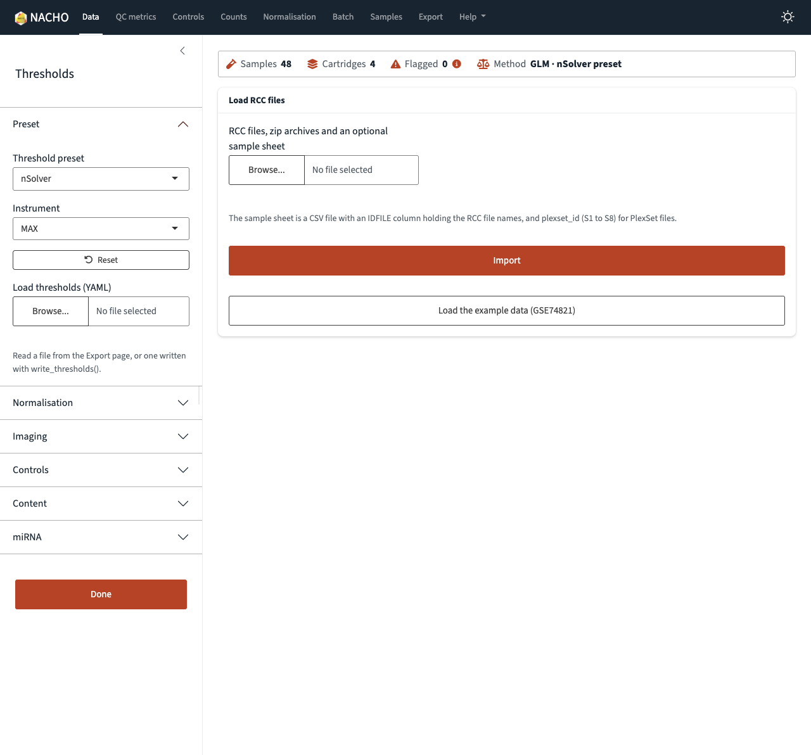
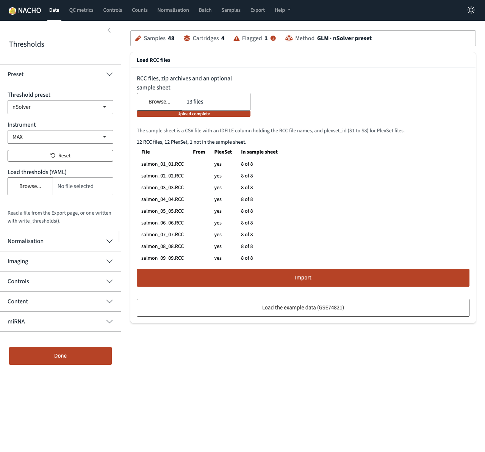
Set the thresholds
The sidebar on the left holds the thresholds and the normalisation settings. Every page uses them. Only one section is open at a time. Each page opens the section that matches its content and folds the others. For example, the QC metrics page opens Imaging.
-
Preset gives a set of starting thresholds. Choose
the
nSolverpreset or theNACHO 2preset, and choose your instrument. Reset returns the thresholds to the preset. Load thresholds (YAML) reads a thresholds file and replaces the preset and the limits. The file comes from the Export page or fromwrite_thresholds()in R. If the file does not give a miRNA threshold, the app uses the value of the preset in the file, asread_thresholds()does. -
Normalisation sets the method, the background, the
background mode and, for RUVg, the number of unwanted factors. To choose
that number, use
suggest_ruv_k()in R. - The other sections hold one slider for each threshold, grouped as imaging, controls, content and miRNA.
Click the question mark below a slider to read how NACHO uses that metric.
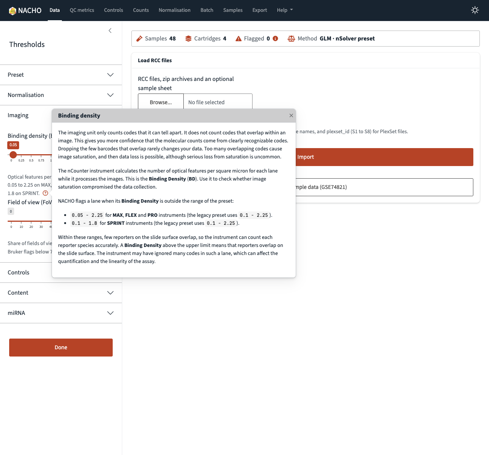
When you move a slider, the flagged samples and the plots change at
once. For example, a field of view threshold of 95 flags one sample of
GSE74821.
Read the plots
Five pages show plots. Each page answers one question.
- QC metrics shows the imaging, linearity and limit of detection metrics, with the thresholds drawn as shaded bands.
- Controls shows the positive controls, the negative controls, the housekeeping genes and the control probes.
- Counts shows counts against the quality metrics, and the principal components.
- Normalisation shows the normalisation factors, the result of the normalisation and the stability of the housekeeping genes.
- Batch shows how the normalisation factors and the principal components relate to the batches.

A page shows only the plots that your data can draw. For example, the housekeeping plots appear only when the study has housekeeping genes.
Display options and full screen
Each plot card has a button with sliders in its top right corner. It opens the display options. There you choose the variable that colours the points, show or hide the legend, and choose a column to label the flagged samples. You can also change the point size, and download the plot as a PNG file with a width and height in centimetres.
The full-screen button appears at the bottom right of a card when you point at it. Click it to see the plot at the size of the window. Click Close, or press the Escape key, to go back.
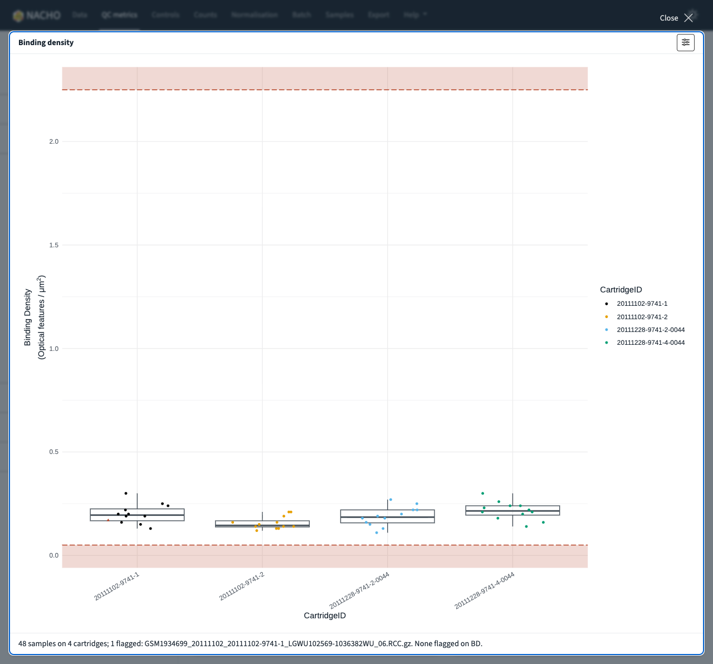
Select a sample
The plots that show one point for each sample are linked. If you select a sample in one place, the app outlines it in all of them.
Click a point in a plot, or choose a sample in Highlight a sample on the Samples page. The Samples page marks the sample in its table. The plots on the other pages outline the same sample. To clear the selection, choose None.
The table on the Samples page lists every sample,
with the flagged samples first. The status of each sample shows as a
coloured word: fail, pass or not assessed. Turn on Flagged
only to show only the flagged samples. If you have the
reactable package, you can also sort the table by a column,
search it, and click a row to select that sample.
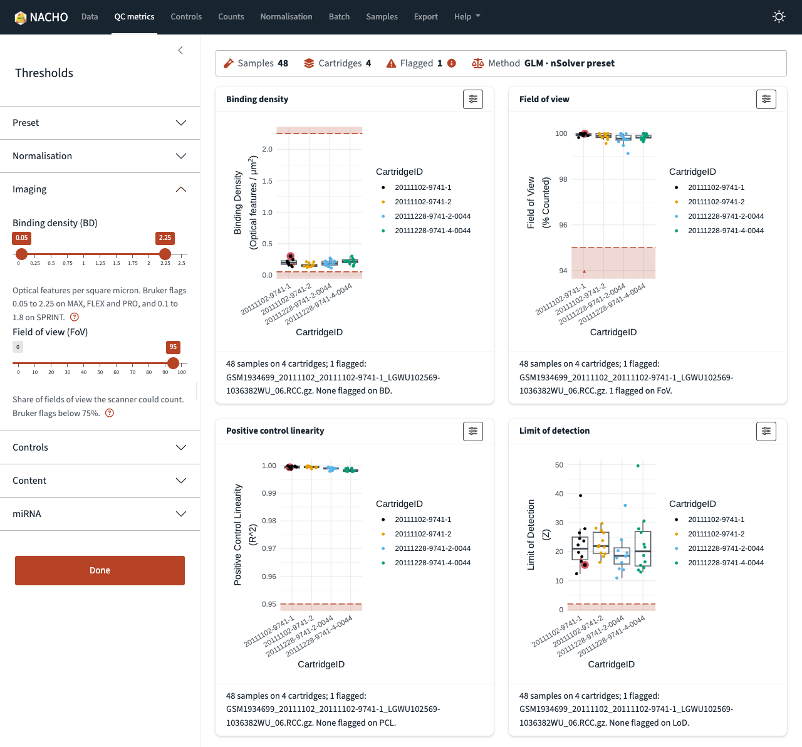
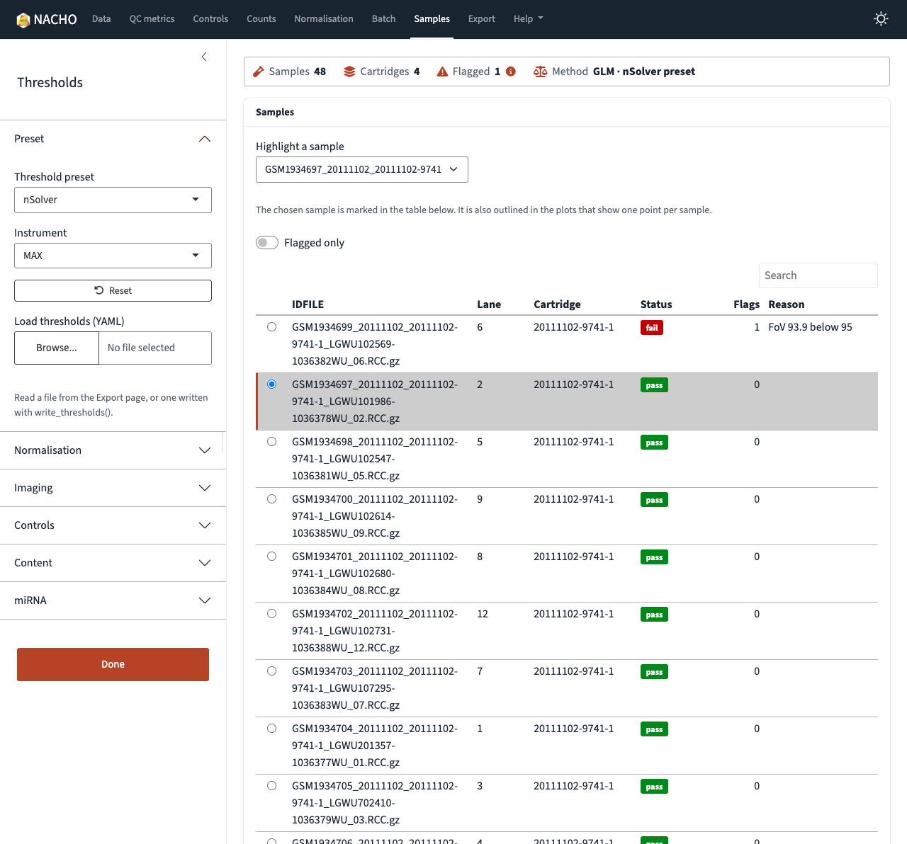
Normalisation and batch
The Normalisation page shows the factors that the app uses to scale the samples, and the result. If you change the method in the sidebar, the page updates. The Batch page checks whether the batches and the biological groups are confounded. Choose the column that holds your groups to see the table.
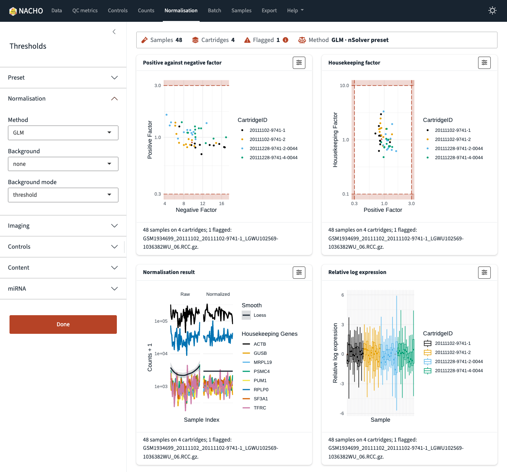
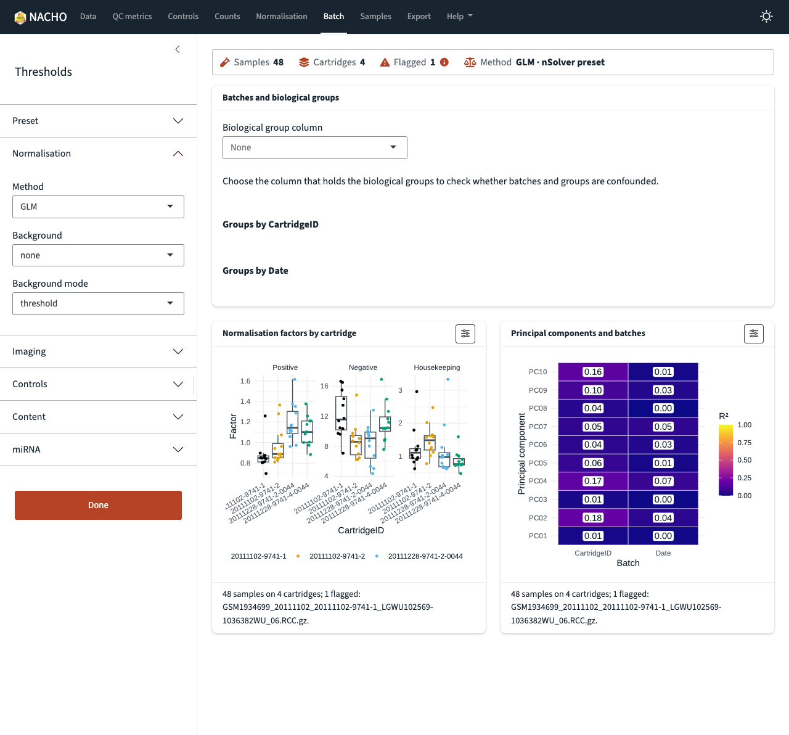
Export the results
The Export page saves your work.
- Quality-control table (CSV) holds the quality-control metrics and the status of each sample.
-
Thresholds (YAML) holds the thresholds that you
set. Load the file in the Preset section of the
sidebar, or read it in R with
read_thresholds(). You can then use the same thresholds for each study. -
nacho object (RDS) holds the object. Read it back
in R with
read_nacho(). - Render the report builds a quality-control report.
- R script holds R code that repeats the analysis of the app, with the same normalisation and thresholds. The Reproduce in R card shows the script before you download it. For your own data, set the paths to your RCC files and sample sheet at the top of the script. For the example data, the script runs as it is.
For the report, enter a title and an author, both optional, and
choose HTML or PDF (Typst). Then click Render the
report. When the report is ready, a button with its file name
appears. The report needs the Quarto command-line interface 1.9.18 or
newer and the quarto package where the app runs. If you
have the mirai package, the app renders the report in the
background.
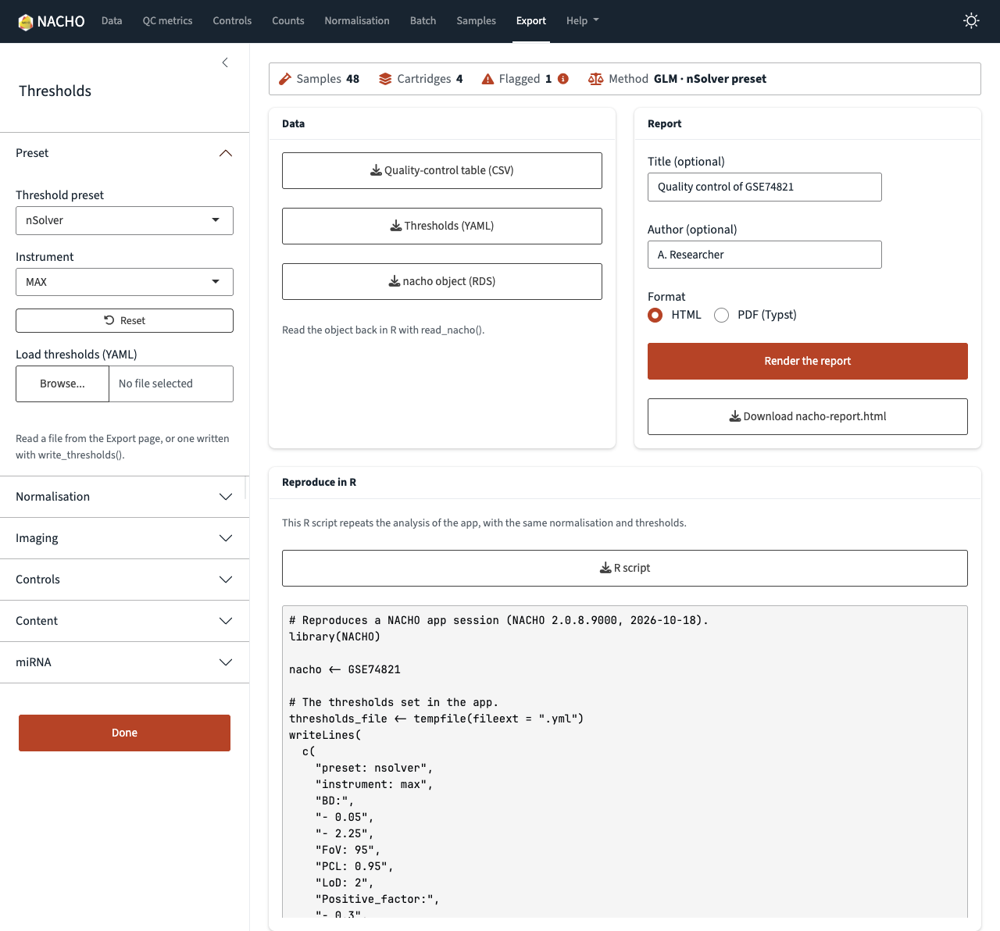
Help
The Help menu in the navigation bar has six items.
- Take the tour shows each part of the app, one step at a time. If no data is loaded, the tour loads the example data first.
- About NACHO explains the app.
- Documentation opens this website.
- Ask a question opens the discussions on GitHub.
- Report a problem opens the issues on GitHub.
- Cite NACHO shows how to cite the package.
Move through the tour with Next and Back, or with the arrow keys. To stop the tour, press Esc or click the close button.
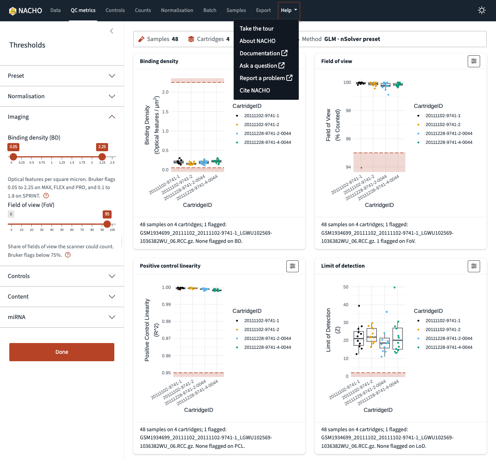
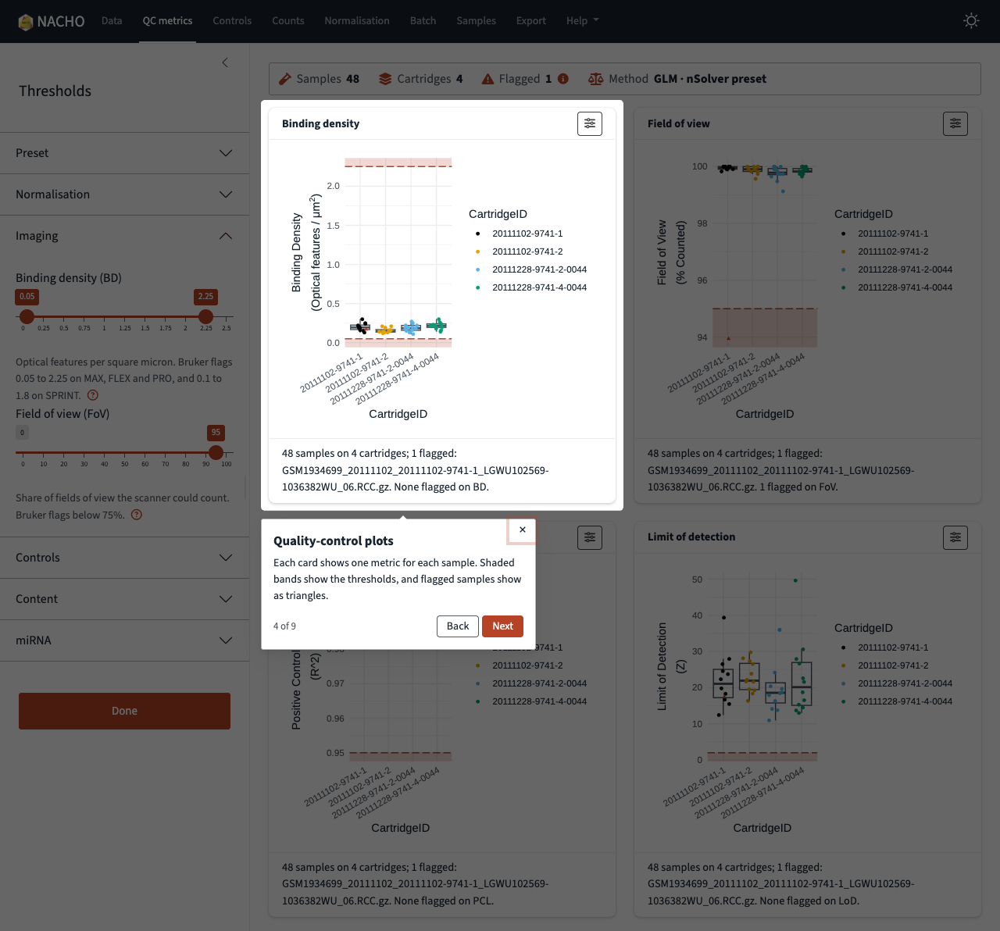
Finish with Done
When you start the app with visualise(), the sidebar has
a Done button. Click it to close the app.
visualise() then returns the nacho object with
your thresholds and settings. Use this object in the rest of your
analysis. If the chosen normalisation method cannot work with your data,
the app shows a message and stays open.
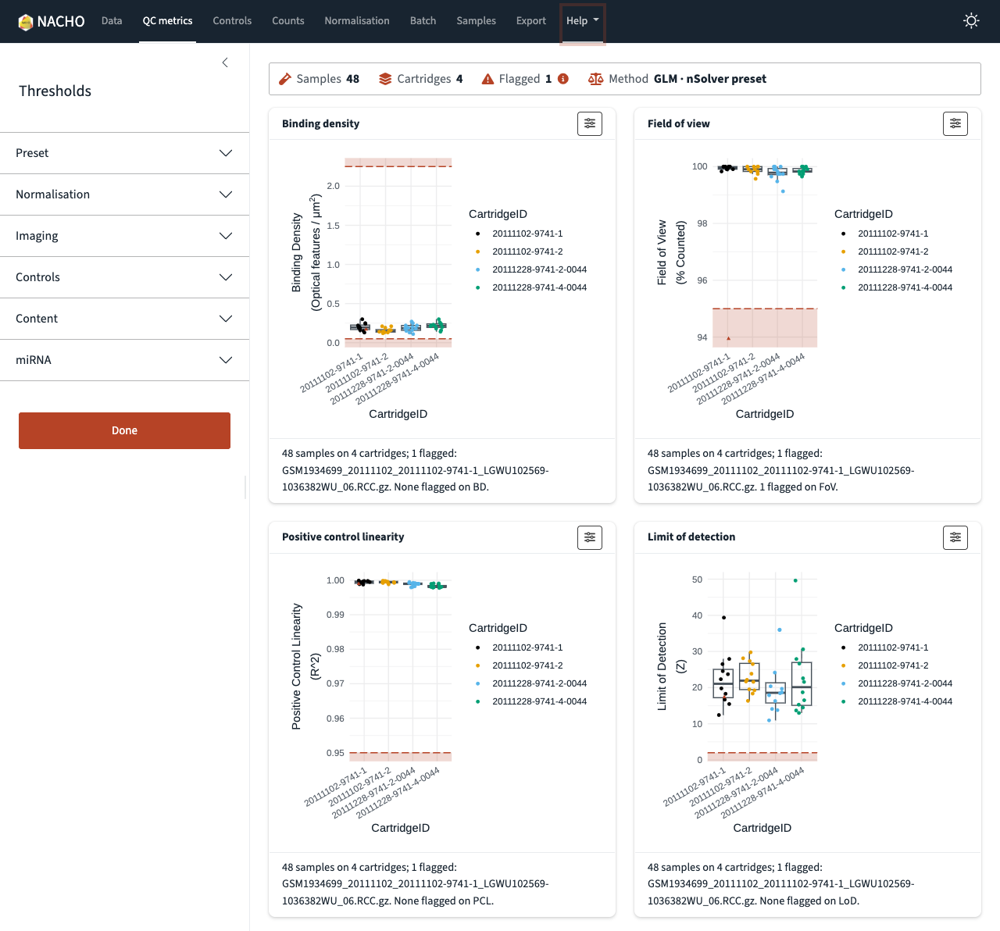
Plot workers
When the mirai and ggiraph packages are
installed, the app builds the interactive plots of a page at the same
time, in background R processes. These processes are the plot workers.
By default, the app starts one worker for each CPU core minus one, with
a maximum of four. The app from deploy() starts one
worker.
Each worker keeps a copy of the study, so its memory grows with the
size of the study. For GSE74821, each worker uses about 170
MB. To change the number of workers, set the
nacho.plot_workers option before you start the app.
To build all plots in the app process, set the option to
0. If the workers do not start, the app builds the plots in
its own process. The workers use the installed NACHO package. All users
of one R process share its workers and its plot cache.